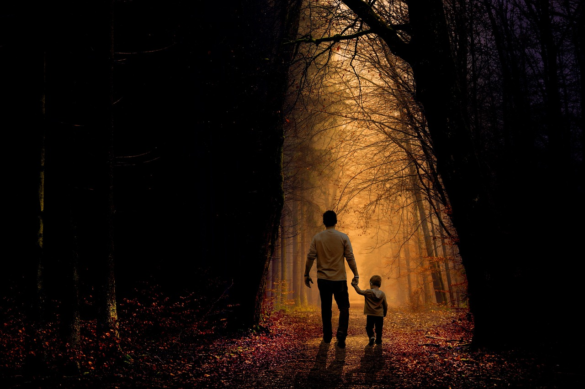

Bueno antes de dar el paso a el articulo de reafirmacion y reforzamiento a los sabios y su filosofia, desearia dar a conocer un poco
sobre una especie de vision y concepto que observe de la vida. Naci en Venezuela estado Aragua en el municipio maracay; en mi origen
provengo de una ciudad pero luego de cuatro anos por asunto de disencion en el matrimonio de mi madre y mi padre que en efecto hubo
separacion llegando al divorcio, no pasando mucho tiempo nos mudamos mi madre y mi hermana para Chirgua un pequeño pueblo de tipo valle
de otro estado no muy lejos, este es el Estado Carabobo, Quiero agregar que fue el mejor lugar donde un nino pudo haber vivido, esta es
mi opinion personal acerca de este Valle, una gran y extensa libertad y felicidad constante tuve en mi nines, hice muchos amigos, nunca
paraba de jugar. Mi madre Gladyz Guzman, una gran luchadora, que buscaba el pan para nosotros dia tras dia, conforme a su instinto y su inteliegnecia
para resolver las necesidades de nuestro hogar, ella era muy humilde en su espiritu pero siempre ha sido muy fuerte aunque era de poca letra
y sin profesion todo esto debido a la ausencia de orientacion por falta de su padre y la perdida de su madre cuando aun era una bebe,
su vida en efecto se torno dura y en algunos aspectos desequilibrada, eso hizo que ciertas tomas de decisiones no hallan sido con sabiduria.
no obstante vivia con mi madre en una casa muy pequena junto con mi hermana un ano menor que yo, creci practicamente en este lugar Chirgua
solo volvi a Maracay cuando estuve los primeros anos en bachillerato, pero luego regrese a seguir estudiando el Bachillerato en el intituto
Paramaconi. Una razon para hacer saber el por que de mi pensamiento y la defensa de todo este tema social, cultural
y humano que vive el mundo entero, de una manera un poco dificil de explicar como de una forma inmersa en mi mente, claro si buscamos definirlo lo
mas subjetivamente me ha comunicado el insconciente o desde el cielo me ha influenciado como de una forma espiritual varias cosas, Pienso en que
un nino de tan solo 4 anos miraba al cielo siempre esperando respuestas, aunque tambien hacia mucha preguntas, siempre fui una persona muy sociable
y extrovertido, pero en asuntos de placeres y acciones no virtuosas siempre fue introvertido hablo desde muy nino hasta la pubertad, estoy claro de que la razon
fue por respeto a esta cierta instancia suprema de mi ser, que de una forma como dije anteriormente inmersa dentro de mi, me indicaba que debia y que no debia hacer.
si este pensamiento se sale un poco o por mucho de alpecto causal y entra al mismo tiempo en ambitos de sincrinicidad por esta misma razon tengo mucho que preguntar a
Gaston Soublette si tuviera la oportunidad.
Reconociendo que los ninos tienen un gran grado de pureza, esto me hace reflexxionar en la atencion que todos los ninos
le daban a la naturaleza; como los largos dias de lluvias, como la esperaban anciosamente para correr en sus corrientes por las calles, las aceras, cuando
caian las elices del fruto del cedro para alcanzarlos, cunado usabamos las hojas de la mata de gallena para a contar todo esto y mucho mas, esto nos da ententder
que la esencia de nuestro ser en su punto mas puro esta ligado a la naturaleza y no solo eso sino que la anhela, lo que me llama la atencion de la naturaleza,
es lo dadivosa que e con nosotros, Pero cuando inicia la llamada etapa de la pubertad me doy cuenta que existe una aglomeracion de conceptos y argumentos e realizacion
y el instinto de la bestia que empieza a despertar este deseo sexual y otros impulsos menores nos podemos percatar que se abre una puerta donde el individuo
comienza a desarrollar la vision a futuro, claro la velocidad evolutiva de este proceso es dependiendo de la influencia de sus modelos de hombre o mujer mas cercanos,
Estos pueden ser padre, madre, hermanos, tios, abuelos y tambien la idiosincracia colectiva del entorno del joven, porque el adolecente con mejor orientacion siempre
de tomar deciciones mas ventajosas debido a los conociminetos de la vida dadas por otros que ya lo vivieron, Pero debo manifestar que tambien veo otra puerta que se abre desapersivida
en la mayoria de los seres humanos; y esta es la puerta de la influencia del modelo de hombre industrial, este hombre que acaba con el orden natural, que esta enfocado solo en involucrarse
en los aspectos de la innovacion, dejando por completo la virtud de la humanidad que solo se preocupa por el poder, que solo por alcanzarlo no le importa acabar con un arbol,
dejar en poco al hombre, destruirlo, se aferra facilmente a la tecnologia como su fuera el oxigeno de su progreso. Esta es mi defensa es muy evidente que este modelo de hombre ha perdido
el verdadero sentido comun. gracias
Por Gastón Soublette Asmussen. Hay momentos en la vida en que es preciso esperar, no adelantar ni meter la mano; tan sólo dejar que las corrientes de la vida vayan dando
forma a las cosas. Hay otros momentos en que no es prudente dilatar la espera sino tomar la decisión y actuar sin más. Hay otros momentos en que nos damos cuenta de que los
acontecimientos que nos comprometen a todos, desde hace mucho tiempo vienen gradualmente cargándose de gravedad y peligrosidad hasta volverse amenazantes. Cuando la virtud
y la sabiduría parecen haber desaparecido del mundo, mientras una moral hipócrita y una ideología insensata ocupan su lugar. Cuando la injusticia y la corrupción lo invaden
todo y el orden mundial amenaza ruina, mientras se elevan los más altos rascacielos y el quehacer humano degenera en un puro negocio de consumo y tecnología y una minoría
exitosa y despiadada acapara la mayor parte de la riqueza del mundo. Cuando ochocientos millones de seres humanos no tienen acceso al agua y sesenta millones de ellos
perecen al año de inanición. Cuando se desata en todas las latitudes el espiral de la violencia delictiva y terrorista y, a causa del crecimiento industrial,
se contaminan los aires y las aguas y se desarticula el ecosistema del mundo alterando el clima y provocando catástrofes de creciente poder que ponen en riesgo
la supervivencia de la especie humana. En esos momentos, lo que corresponde hacer es movilizar la suficiente fe y el suficiente coraje como para enfrentar la evidencia
de que ya no podemos seguir nuestro trajín habitual por calles interminables como si aún quedara tiempo disponible para continuar aguantando ese rutinario día a día.
Porque hay momentos en que tú necesitas encontrarte a ti mismo entre tantos extraños y caer en la cuenta de quién eres realmente en ese contexto, y sin creerte un iluminado,
reconocer, sin embargo, que una porción de espíritu te ha sido dada, y que eso, es decir el misterio, es lo que te hace vivir. Eso está por sobre tus faltas y caídas,
porque si bien no puedes decir con certeza cómo será ese mundo que deseas para ti y los tuyos, estás seguro, sí, de que no perteneces a este mundo de amos y esclavos
del dinero, que no tienes cuota alguna de poder para explotar a otros ni deseas alterar y manipular la naturaleza para sacar provecho de ella en desmedro de otros
y de la vida misma. Pero esa porción de espíritu que te ha sido dada no tiene nada que ver con tu esfuerzo ni con tus talentos. Es un don gratuito del cielo que
es preciso cultivar y agradecer. No es que vaya a haber un juicio final... el juicio hace ya mucho tiempo que empezó, mientras dormíamos. Hoy nos hallamos en medio
de sus más acalorados alegatos. Pero, aunque no sepamos quiénes son ahí nuestros acusadores, ni nuestros jueces ni defensores, su finalidad se está cumpliendo,
esto es, separa a los unos de los otros. No se trata de buenos o malos, porque ocurre que todos somos fallados, y si de escoger se trata, sería preferible quedar
entre los malos, porque a todas luces los buenos son “ellos”, y si te arrimas mucho a su tribuna puedes contagiarte con su bondad, perder tu identidad y volverte
un peligro para la sociedad. La verdad es que en este juicio se trata sólo de quienes aman y de quienes ganan. Así de simple. A ellos se les ve muy bien concertados.
Son vivaces y seguros, como dice el Viejo Chino, porque son ellos los que hacen progresar al mundo.
Pero algo les está saliendo mal en el ejercicio del poder que
detentan desde hace más de dos siglos, porque ocurre que so pretexto de mejorar lavida están obteniendo frutos de muerte que ya no pueden disimular. Por eso ahora
alzan la voz previendo un probable Apocalipsis, para enseguida consolarnos con la buena nueva de que el mismo sistema que nos llevó al desastre es el que puede salvarnos
del colapso, pero a condición de que sus ganancias no sufran menoscabo. En cambio, a los otros se los ve muy desconcertados, en nada seguros ni vivaces, viviendo en los
nichos de existencia, modos de hacer, espacios mentales y economías que otros les han fijado. Da la impresión de que los tienen cogidos por el cuello, porque “ellos”
parecen haber ganado al fin su guerra... Un triunfo bastante poco honroso, hay que decir, porque a pesar de todas las precauciones que tomaron, el fermento letal
que pusieron en su obra sube ahora a la superficie a la vista de todos. Pero ¡cuidado! Este es precisamente el momento de la gran tentación, porque si bien no se escucha,
ya todos dicen para sí: ¡Sálvese quien pueda! Cuando el carpintero de Nazareth les dice a sus discípulos: “Velad y orad para no caer en tentación”, la noche de su aprehensión,
se está refiriendo a la tentación de echar pie atrás, al ver, sin entender, que el maravilloso Maestro, capaz de resucitar muertos, es materialmente enemigos.
Porque en lo que a “ellos” se refiere, bien sabido es que hacen lo que quieren con las masas indefensas, hacen lo que quieren con los árboles, la tierra, los ríos,
lagos y glaciares; hacen lo que quieren con el patrimonio. Ellos moldean la opinión pública a su antojo, envían ejércitos a aniquilar pueblos enteros so pretexto
de liberarlos. Así puede el mundo volver a ver cómo se acusa, se humilla, se flagela y se crucifica al modelo del Hombre, ese que todos llevamos dentro como una
posibilidad siempre cierta de ser algo más que eso que somos, posibilidad que “ellos” han procurado cerrarnos desde siempre, porque son los peores enemigos de nuestro
Cristo que se han visto en la historia, desde aquellos césares antiguos de todos conocidos. Es entonces que se impone para ti dar un vuelco de conciencia y entender
que tu aparente impotencia ante su poder es también un poder, y más aún, que por esa porción de espíritu que tienes dentro eres invencible, en la medida que quieras
darte cuenta de eso y resistas hasta el fin. Eso es lo que se llama fe, y si por la fe eres invencible, es porque la fe se comparte, y si alguna luz obtienes
de tu porción de espíritu, es porque ella no te pertenece, porque es del cuerpo de fraternidad que tú integras con otros para humanizar la tierra. Ahora que
has leído esto, piensa que algo quedó atrás definitivamente, aunque por el momento no se note; y eso que has dejado atrás es la contaminación que sufrió tu alma
por el dominio que “ellos” han ejercido sobre nosotros hasta lograr imponernos sus criterios de verdad sobre las cosas y los hombres. Por eso tu vuelco de conciencia
consiste en revalorar lo que ya tienes, eso que ellos simulan ignorar desde siempre porque le temen
Donde reina la sabiduria no habra conflicto entre pensar y sentir, la fluides y el sonido de esta expresion casi la persibi como una hermosa cancion,
se destaca la importancia de la sabiduría para lograr la armonía entre el pensamiento y el sentimiento, ahora hare notar la filosofia de carl gustav jung.